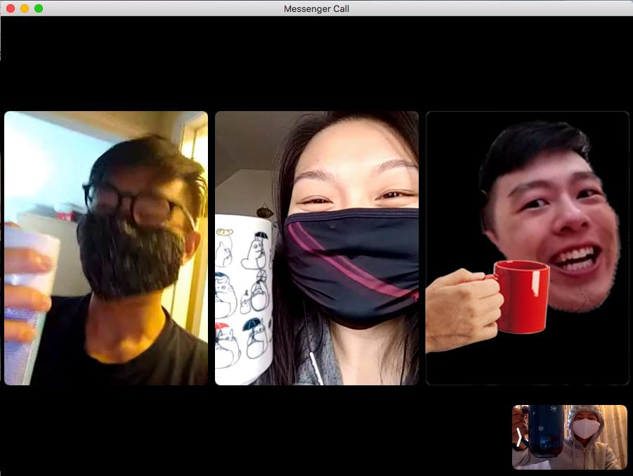

Context
This project was a thirteen-week Directed Study supervised under Carman Neustaedter,
taking a deep dive into the informal conversation habits of knowledge workers in North America.
Within the project, our team conducted a literature review and user interviews to ultimately build a
research report documenting COVID-19’s impact on project teams. This report informed our solution —
Workestra, a new interaction for remote teams with the aim to reduce social isolation throughout the workday.
Reflection
This problem space afforded exploration through many facets of remote work due to new problems, presenting fruitful
opportunities for intervention. We were debating on continuing this idea and bringing it to life, but due to a security
issue with keylogging, we decided against it.
Although there were instances of struggle and frustration, we are extraordinarily proud of our creation.
After completing the project, many of us showed Workestra to friends, family, and working professionals,
and were blown away by the need for something like this in the workplace.

This was our team! Right to left: Ethan, Eliza, Brendan, Audrey.